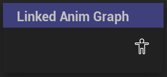

Linked AnimGraph
Links an external AnimBP into a node
UAnimGraphNode_LinkedAnimGraph
FAnimNode_LinkedAnimGraph

Links a separate AnimBP with the same skeleton into this one.
The initial InstanceClass defines the signature of the node by unreal tracking how many input nodes are present and creating the corresponding inputs on the node.
The signature, which will not change when a new AnimBP gets linked. Instead, Unreal will try to make a guess of which inputs defined by the the signature correspond to any of the inputs the new AnimBP takes. Inputs that unreal cannot match are left with the refpose.
The InstanceClass on a LinkedAnimGraph is initially defined statically in the nodes’ details, but it can be changed at runtime using the LinkAnimGraphByTag method.
A linked AnimGraph instance will have all of their methods called as if it were a standalone AnimBP(e.g. InitializeAnimation, BeingPlay, UpdateAnimation).
The linked AnimBP in the node can be accessed by tag for example using the GetLinkedAnimGraphInstancebyTag method, if the node has been assigned a tag in AnimGraph.
Note: This can only be done some point after InitializeAnimation is finished, since the AnimBP has not been linked into the node yet at that point. Instead use LinkedAnimationLayersInitialized or BeginPlay for example.
In the nodes’ details, there are also options to receive animnotifies from linked instances and to propagate them to linked instances as well.
Linked AnimGraphs were originally introduced in Unreal with a different name: sub AnimInstances, and are occasionally still referred to by that name. They are an older feature that has been for the most part replaced by linked AnimLayers)
While they still might have occasional usecases since they are independent of Animation Layer Interfaces, I think they are considered more of a legacy feature. This seems to be also reflected by the fact that the documentation for UE5.3 is still untouched since UE4.26 when this was introduced.